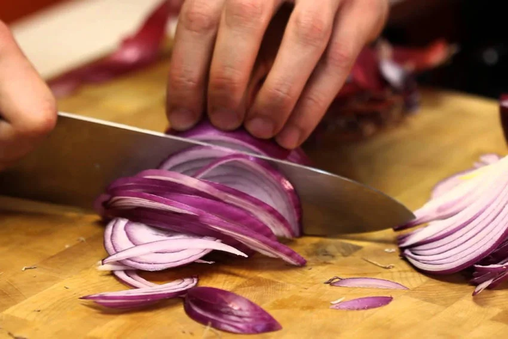
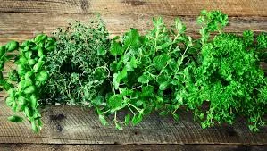
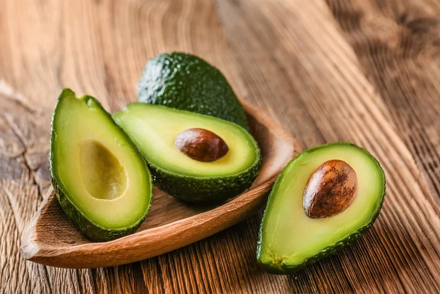
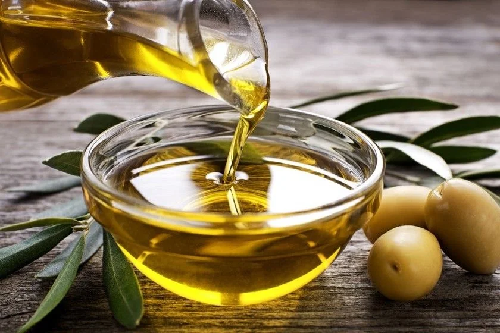
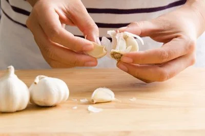

Mejora tus Habilidades en la Cocina

Corte sin Lágrimas
Coloca las cebollas en el freezer por 10 minutos antes de cortarlas para evitar llorar.

Conservar Hierbas
Guárdalas en un vaso con agua y cúbrelas con una bolsa para mantenerlas más tiempo.

Madurar Aguacates
Colócalos en una bolsa con una banana o manzana para acelerar su maduración.

Temperatura del Aceite
Introduce un palillo: si burbujea alrededor, el aceite está en la temperatura ideal.

Pelar Ajo sin Esfuerzo
Colocá los dientes de ajo en un frasco, agitá 20 segundos, y las cáscaras saldrán casi solas.
Pasta Perfecta
Revolvé la pasta en los primeros 2 minutos de cocción para evitar que se pegue entre sí.